Modellazione semplificata di pile da ponte come sistemi a un grado di liberta
Perché ridurre una pila a un oscillatore
Una pila snella può essere letta in prima approssimazione come una mensola con massa concentrata in sommità . Il modello equivalente consente di stimare periodo, rigidezza laterale e azione sismica prima del FEM.
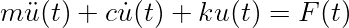
Rigidezza laterale.
Per una mensola prismatica:
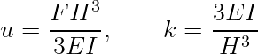
Periodo e forza equivalente.
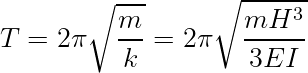
Se lo spettro fornisce
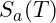
in multipli di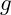
: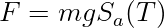
Esempio. Con
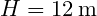
,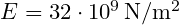
,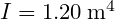
,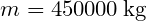
: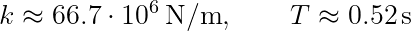
Con
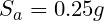
: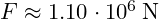
,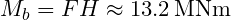
.Riferimenti tecnici utilizzati:
- D.M. 17 gennaio 2018, Aggiornamento delle Norme Tecniche per le Costruzioni (NTC 2018).
- Circolare C.S.LL.PP. 21 gennaio 2019, n. 7, Istruzioni per l'applicazione dell'Aggiornamento delle Norme Tecniche per le Costruzioni.
Nota StruHub.
Il modello a un grado di libertà resta un controllo preliminare; StruHub lo collega poi ad analisi modali e time-history distribuite.
Massa efficace e forma modale
Il valore della massa nel modello a un grado di libertà non è una scelta puramente geometrica. Se una quota di massa è distribuita lungo la pila, la sua partecipazione dipende dalla deformata assunta. Per una forma modale
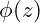
, la massa generalizzata è: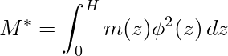
Il fattore di partecipazione nella direzione orizzontale è:
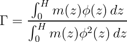
Questa distinzione evita di assegnare al sistema una massa troppo alta o troppo bassa.
Uso del modello come controllo di ordine di grandezza
Il modello SDOF è utile se viene usato come controllo: periodo, taglio alla base e momento devono avere ordini di grandezza compatibili con il FEM. Se il FEM restituisce un periodo molto diverso, la causa può essere in una massa distribuita male, in vincoli non coerenti o in una rigidezza sezionale non fessurata assunta senza criterio.
Per trasformare la riduzione di una pila a oscillatore equivalente in un riferimento tecnico è utile separare tre livelli: il modello fisico, il modello numerico e la lettura dei risultati. Il modello fisico identifica masse, rigidezze, smorzamento e azioni. Il modello numerico stabilisce come queste grandezze entrano nell'equazione del moto. La lettura dei risultati decide quali effetti sono davvero utili al progetto.

Nel caso di pila da ponte, la matrice di massa non è un dettaglio secondario. Una massa assegnata al nodo sbagliato modifica frequenze proprie e partecipazione modale; una rigidezza non coerente con la sezione resistente sposta il periodo e altera la domanda dinamica. Prima di discutere il risultato, il modello deve produrre modi plausibili.
Passaggio modale e significato dei modi
Il problema agli autovalori consente di estrarre frequenze e deformate. La forma modale non è solo un disegno: indica quali parti della struttura partecipano a un certo tipo di moto. Se la deformata è locale, il modo può essere poco rilevante per la risposta globale ma importante per una sollecitazione locale.


La massa partecipante permette di passare da una lista di frequenze a una gerarchia ingegneristica. Un modo con alta partecipazione nella direzione dell'azione è un modo che può governare spostamenti e tagli globali. Modi con partecipazione inferiore possono comunque influenzare accelerazioni o curvature.
Procedura di calcolo consigliata
Una procedura robusta per la riduzione di una pila a oscillatore equivalente parte da un controllo statico o quasi-statico, prosegue con l'analisi modale, quindi entra nel dominio del tempo solo dopo aver verificato che frequenze e deformate siano coerenti. In questo ordine, l'analisi dinamica diventa un approfondimento controllato, non una scatola nera.
- definizione di geometria, masse e rigidezze;
- estrazione di periodi e forme modali;
- scelta dello smorzamento e del passo temporale;
- applicazione della storia di carico o del segnale;
- estrazione di periodo, massa efficace e rigidezza;
- confronto con un controllo semplificato.
Esempio di controllo numerico
Supponiamo che il primo controllo restituisca un periodo teorico di (0.55\,\mathrm{s}) e il modello FEM un periodo di (0.92\,\mathrm{s}). La differenza relativa è:

Uno scarto del 67% non va ignorato. Può derivare da vincoli troppo flessibili, massa eccessiva, inerzia ridotta o unità non coerenti. Questo tipo di controllo è ciò che distingue un calcolo numerico da un uso passivo del software.
Lettura progettuale. Il modello equivalente è particolarmente utile come controllo indipendente del FEM. Se periodo stimato e periodo numerico differiscono molto, prima di discutere il sisma conviene controllare masse, vincoli e inerzie. Un riferimento tecnico deve quindi mostrare non solo la formula, ma il motivo per cui quella formula è stata usata e il modo in cui il risultato viene interpretato. La parte finale del calcolo dovrebbe sempre riportare domanda, capacità , margine e ipotesi principali.
Impostazione del modello. Per usare questo tema come riferimento tecnico, conviene separare la modellazione in fasi verificabili. La prima fase è la definizione dello schema resistente: geometria, vincoli, masse, rigidezze e grandezze da estrarre. La seconda fase è la scelta del tipo di analisi: controllo statico, analisi modale, analisi nel tempo o confronto tra più livelli di modello. La terza fase è la lettura critica dei risultati, che non deve limitarsi al valore massimo ma deve includere posizione, segno, combinazione o istante di occorrenza.
Un controllo utile consiste nel confrontare sempre un risultato numerico con una stima semplificata. Per esempio, un periodo ottenuto con FEM dovrebbe essere compatibile con una valutazione manuale basata su massa e rigidezza. Se l'ordine di grandezza non torna, il problema non è nel solutore ma nella rappresentazione fisica del sistema.
La catena minima di controllo può essere scritta così: definizione del modello, verifica delle unità , estrazione delle frequenze, scelta dello smorzamento, applicazione dell'azione, inviluppo degli effetti, interpretazione del margine. Ogni passaggio deve lasciare una traccia riproducibile.
Unità , segni e grandezze da archiviare. Le analisi dinamiche sono molto sensibili alla coerenza delle unità . Massa in chilogrammi, forze in Newton, rigidezze in Newton per metro e accelerazioni in metri al secondo quadrato devono essere trattate nello stesso sistema. Un errore tra massa e peso può spostare il periodo di un fattore significativo.
Per ogni analisi è utile archiviare almeno: periodo fondamentale, masse partecipanti, smorzamento, passo temporale, massimo spostamento, massimo taglio, massimo momento e istante di occorrenza. Se il modello lavora per inviluppi, va salvata anche la sezione in cui ciascun effetto governa.
La grandezza di progetto non è sempre il massimo assoluto. Nelle verifiche accoppiate può essere necessario leggere valori concomitanti. Se il massimo momento si verifica a un certo istante, lo sforzo normale da usare nel dominio di verifica deve essere quello dello stesso istante, non il massimo normale indipendente.
Esempio di controllo incrociato. Supponiamo che un modello dinamico restituisca un taglio massimo alla base pari a (2.80\,\mathrm{MN}), mentre il controllo statico equivalente fornisce (2.35\,\mathrm{MN}). Il rapporto è:

Il dato indica una amplificazione del 19%. Questo non significa automaticamente che il modello dinamico sia più corretto, ma segnala che l'effetto dinamico non è trascurabile. A questo punto il tecnico deve controllare se la velocità , il contenuto in frequenza o il segnale sismico sono coerenti con la condizione più gravosa.
Se invece il rapporto fosse inferiore a 1, non si dovrebbe concludere in modo automatico che la dinamica è meno gravosa: potrebbe essere cambiata la grandezza controllata, oppure la massima risposta dinamica potrebbe verificarsi in un'altra sezione.
Come trasformare il risultato in testo tecnico. Un post di riferimento deve chiudere il cerchio: non basta presentare formule e grafici. Bisogna spiegare quale grandezza governa, quale ipotesi è più sensibile e quale controllo manuale consente di validare il risultato. Questa impostazione rende il contenuto utile anche a chi non usa lo stesso software, perché il metodo rimane trasferibile.
Controllo dimensionale. Un riferimento tecnico deve permettere al lettore di controllare gli ordini di grandezza. Ogni risultato numerico dovrebbe essere accompagnato da un controllo dimensionale, da una interpretazione fisica e da una indicazione del parametro dominante. Se una formula restituisce un valore in  ,
,  ,
,  o
o  , l'unita deve essere esplicita e coerente con le grandezze inserite.
, l'unita deve essere esplicita e coerente con le grandezze inserite.
La forma generale di una verifica puo essere letta come:

dove  e l'effetto dell'azione di progetto e
e l'effetto dell'azione di progetto e  la resistenza di progetto. Questa scrittura, comune a molti problemi strutturali e geotecnici, aiuta a separare domanda, capacita e margine.
la resistenza di progetto. Questa scrittura, comune a molti problemi strutturali e geotecnici, aiuta a separare domanda, capacita e margine.
Dal calcolo alla decisione. Il valore finale non basta. Bisogna chiedersi da quale ipotesi dipende, quanto e sensibile ai parametri e quale meccanismo fisico rappresenta. Un margine ottenuto con parametri poco tracciabili ha meno valore di un margine piu modesto ma ben documentato. Per questo, quando si cita una norma o un criterio di combinazione, il riferimento deve essere scritto in modo esplicito e verificabile.
Riferimenti normativi e bibliografici utilizzati:
- D.M. 17 gennaio 2018, "Aggiornamento delle Norme tecniche per le costruzioni", Ministero delle Infrastrutture e dei Trasporti, Supplemento ordinario alla Gazzetta Ufficiale n. 42 del 20 febbraio 2018.
- Circolare C.S.LL.PP. 21 gennaio 2019, n. 7, "Istruzioni per l'applicazione dell'Aggiornamento delle Norme tecniche per le costruzioni di cui al decreto ministeriale 17 gennaio 2018".
- UNI EN 1990:2006, Eurocodice - Criteri generali di progettazione strutturale.
- UNI EN 1991-2:2005, Eurocodice 1 - Azioni sulle strutture - Parte 2: Carichi da traffico sui ponti.
- UNI EN 1992-1-1:2015, Eurocodice 2 - Progettazione delle strutture di calcestruzzo.
- UNI EN 1993-1-1:2014, Eurocodice 3 - Progettazione delle strutture di acciaio.
- UNI EN 1994-2:2006, Eurocodice 4 - Progettazione delle strutture composte acciaio-calcestruzzo - Ponti.
- UNI EN 1997-1:2013, Eurocodice 7 - Progettazione geotecnica - Parte 1: Regole generali.
- UNI EN 1998-2:2011, Eurocodice 8 - Progettazione delle strutture per la resistenza sismica - Ponti.